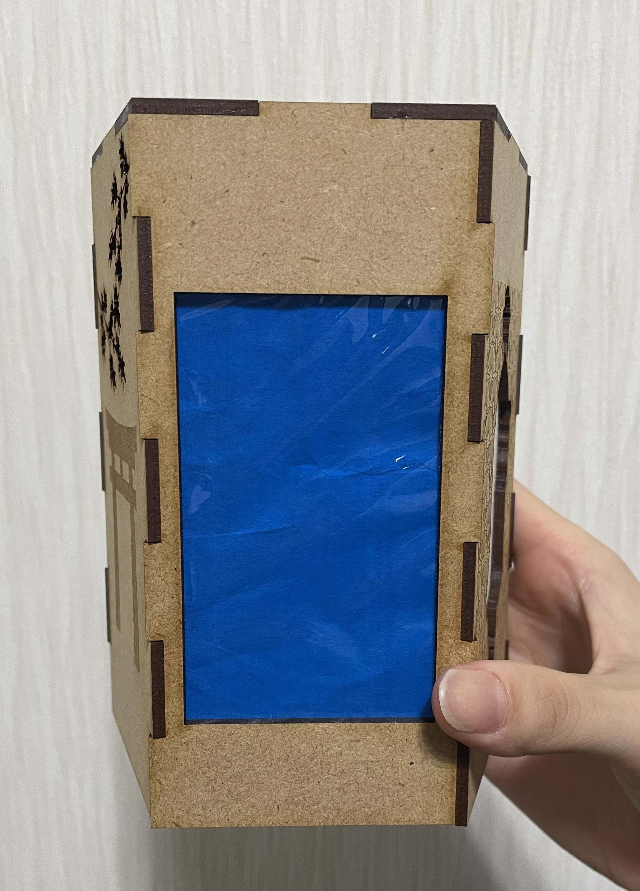
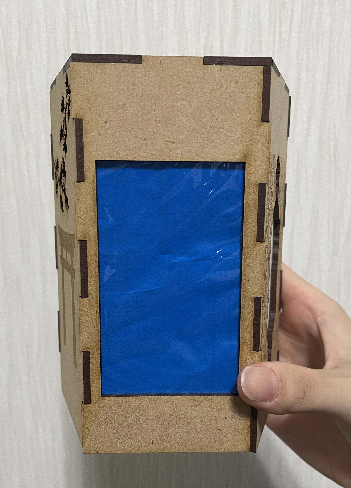

-
作品のタイトル
プラネタリウムにもなる癒しのライト
- 構想段階のスケッチ
- 実際に作った作品
ライトなしver.
 


ライトありver.

- 設計ファイル
aiファイル
今回は大学のPCに入っている「Illustrator」を使用しました。
- 作品の説明
工夫した点かく - 参考にしたリンク
#先輩のHP、先生のあげてくれた箱のアプリ - 感想
Assignment2
PCなどに貼ることができるステッカーを作ってみました。
映画が好きなのでチケット風のステッカーにしました。 このステッカーも「Illustrator」を使って作りました。
一番頑張ったところは図形のシルエットです。 丸と四角と三角を組み合わせて、四隅は昔の映画のチケットと同じデザインにしてみました。
初めは細かいデザインを考えていましたが、カッティングプロッターが細かいデザインを得意としなかったので 大きめのシンプルなデザインにしました。
※最初に考えたデザイン
#お花の失敗作写真入れる